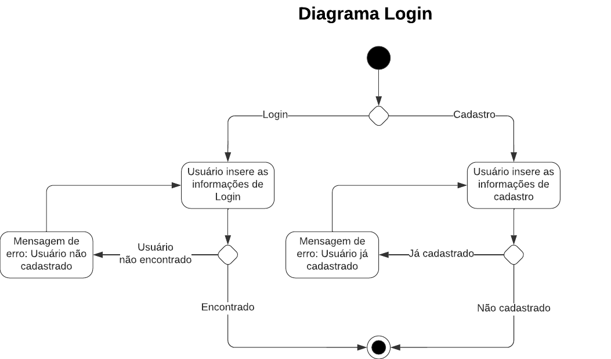
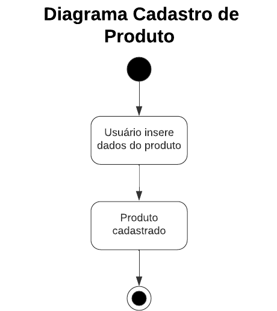
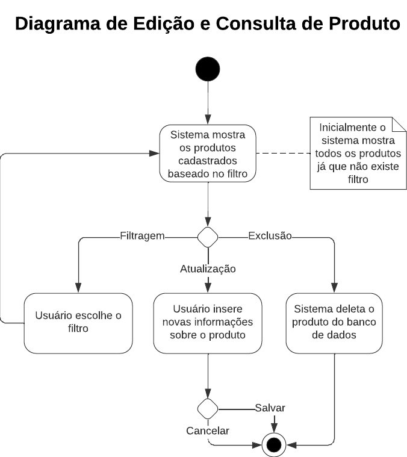
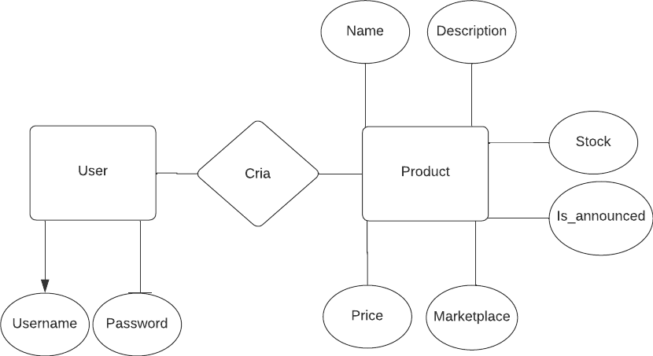
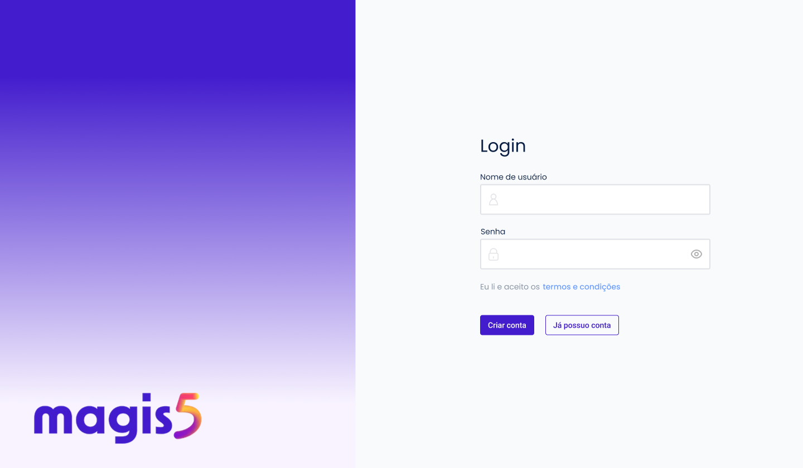
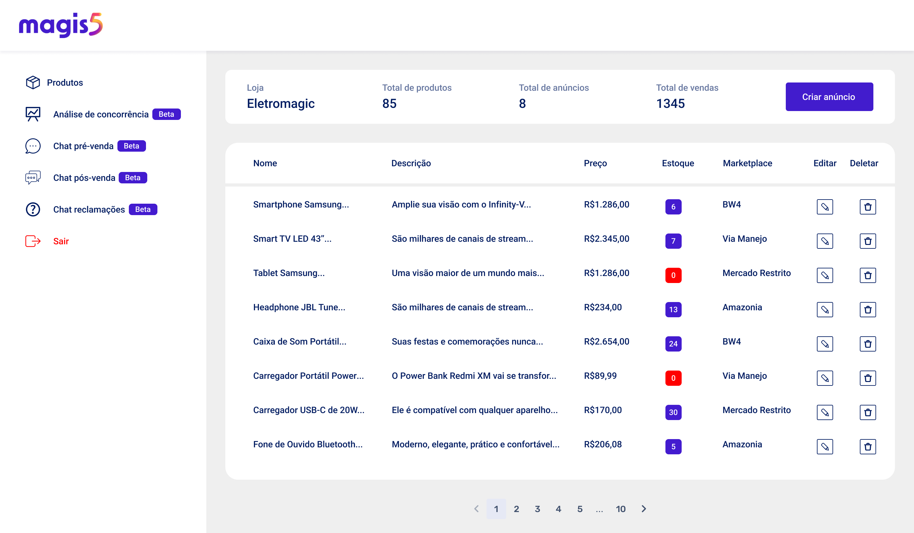
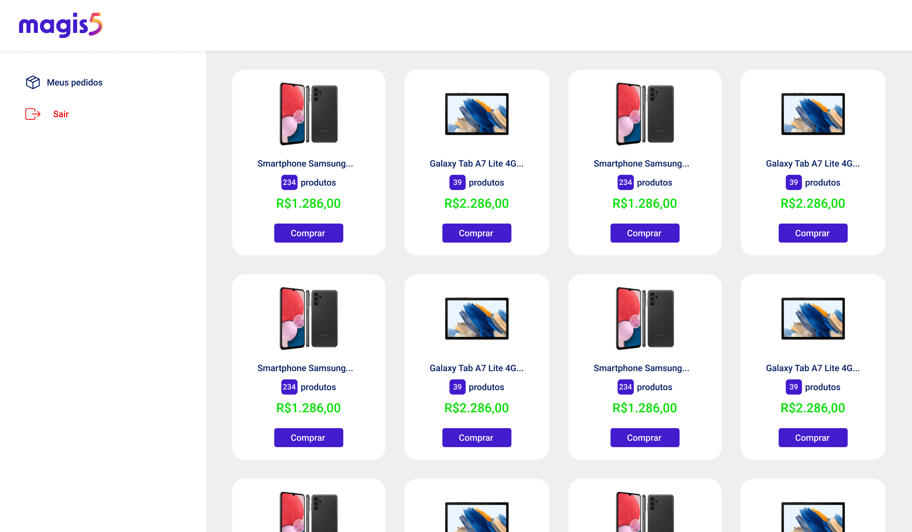
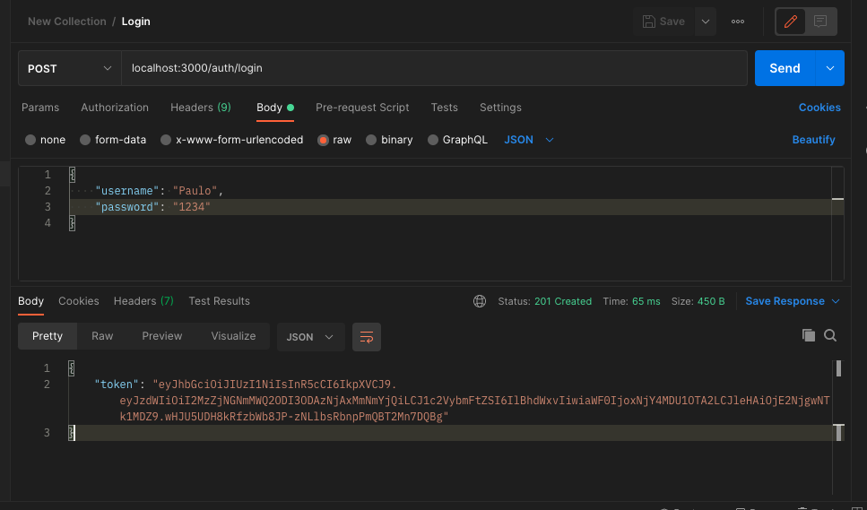

Documentação Técnica
Requisitos Funcionais
Solução 1 - ERP
- O usuário deve poder cadastrar novos produtos com nome, descrição e estoque.
- O estoque deve ser atualizado tanto via ERP quanto via requisição de sistema Centralizador de Vendas.
Solução 2 - Marketplace
- O sistema deve poder cadastrar anúncios requisitados pelo Centralizador de Vendas.
- O usuário deve poder comprar produtos anunciados.
- O sistema deve enviar a informação de que uma compra foi feita para o Centralizador de Vendas.
- O sistema deve poder atualizar os valores de estoque com a requisição do Centralizador de Vendas.
Solução 3 - Centralizador de Vendas
- O usuário deve poder consultar a base de produtos cadastrados.
- O usuário deve poder editar produtos cadastrados.
- O usuário poder excluir produtos cadastrados.
- O usuário deve poder requisitar a criação de novos anúncios nos Marketplaces conectados ao sistema.
- O sistema deve atualizar o estoque com a chegada da requisição do Marketplace.
Diagramas de Atividade



Modelo do Banco de Dados
{: class="aligncenter")
Requisitos Técnicos
Front End
Foi criado um protótipo de como o Centralizador de Vendas se pareceria na sua versão final utilizando o Figma. Nossa ideia era de desenvolver um Front End funcional utilizando HTML, CSS e JavaScript porém devido o tempo e as complicações e isso não foi possível.
 
Também foi feito uma tela simbólica para a solução 2, do Marketplace.

Back End
O que foi feito
Foi criada um cluster remoto no MongoDB Atlas para que pudesse servir como nossa base de dados. Para nossa aplicação, Node.js juntamente com Nestjs foram utilizados para compor o back end.
Criamos um método de criar e atualizar usuários no cluster, e também desenvolvemos um método de autenticação para os mesmos. O Login é feito e um token de autorização é retornado para que o acesso ao BD remoto seja garantido.

Criamos também um método para criar e inserir produtos no BD. No qual o app utiliza-se do token de autenticação gerado para inserir um produto no BD, no qual, conta com o username como chave estrangeira para identificação de qual usuário é dono do respectivo produto.

O que queríamos ter feito
Considerando o pouco tempo disponível para o desenvolvimento, acabamos sem finalizar as seguintes funcoes:
- updateProduto
- anunciaProduto
A ideia de updateProduto é chamar um endpoint que seria responsável por atualizar o produto com novos dados inseridos pelo usuário.
Já a de anunciaProduto seria apenas um set da variável anuncia como true e um update na sua variável de array com o respectivo marketplace anunciado, para que apenas os produtos anunciados fossem exibidos na página de marketplace.